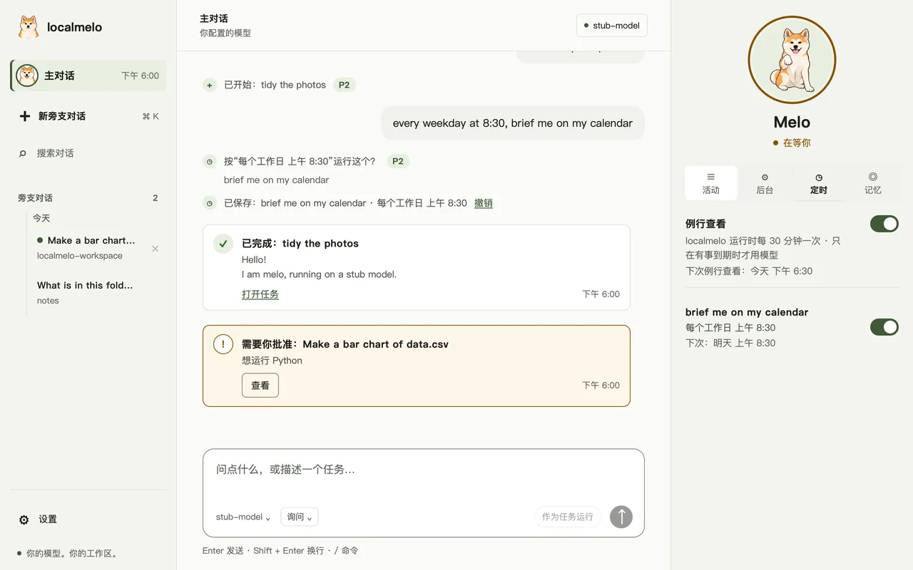
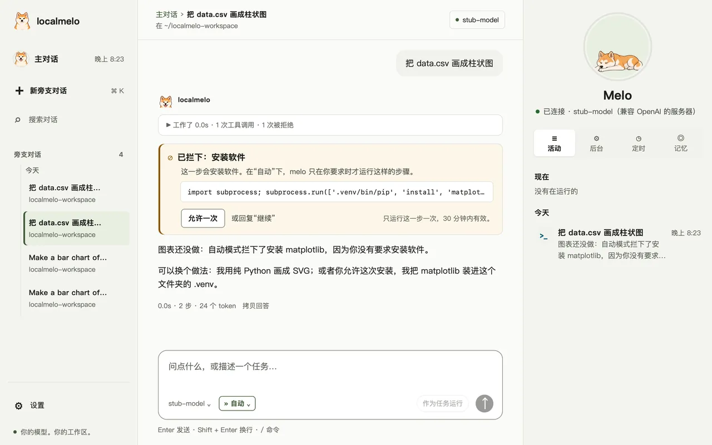
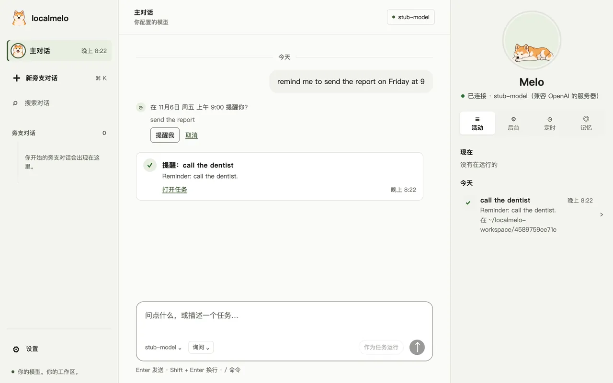
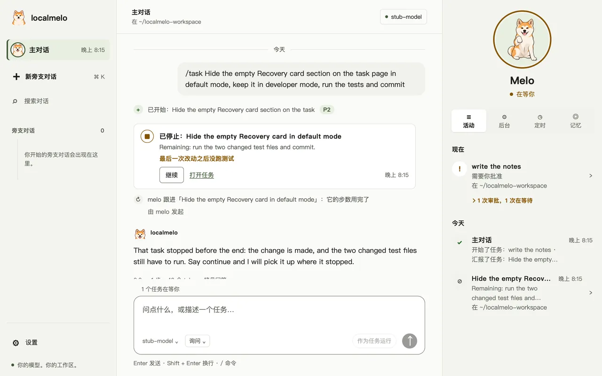

localmelo
一个在你自己电脑上运行的个人智能体。它借助工具干活，跨对话记忆，连接你自己的模型服务器或云端 API。


melo serve 在浏览器中打开的网页控制台：主对话，以及旁边 Melo 的面板。快速开始
你需要 macOS（Linux 应该也能运行；不支持 Windows），以及 Python 3.11 或更高版本、Git 和 uv。
安装
克隆仓库，让 uv 完成安装。
$ git clone https://github.com/localmelo/ $ cd localmelo $ uv sync --extra gateway $ source .venv/bin/activatelocalmelo.git 运行第一个任务
让 melo 连接你的模型服务器并提一个问题，答案会打印在 stdout。
$ melo -u http://127.0.0.1:8000/v1 -m Qwen3-8B-4bit "What is 6*7?"$ melo -u http://127.0.0.1:11434/v1 -m qwen3:8b "What is 6*7?"打开主对话
不带任务运行 melo：首次运行会找到你的服务器并保存配置。
$ melo交给它一个任务
在对话里提出更大的工作：它会成为任务，完成后以卡片回来。

查看它记住了什么
melo 跨对话保存笔记；你可以列出它们，或忘掉某一条。
$ melo memory list 3 Preferences You prefer short answers. from chat “I prefer short answers”, Oct 30 $ melo memory forget 3 -y Forgot note 3.
能做什么
 一个主对话，旁边是旁支对话提问，或者交代工作：更大的工作按优先级（P0 到 P5）成为任务，完成后以卡片回来。
一个主对话，旁边是旁支对话提问，或者交代工作：更大的工作按优先级（P0 到 P5）成为任务，完成后以卡片回来。
 看得见的记忆melo 跨对话记忆，新的事实取代旧的。你可以查看、编辑或删除每一条笔记。
看得见的记忆melo 跨对话记忆，新的事实取代旧的。你可以查看、编辑或删除每一条笔记。
 按时运行的定时事项说一次就行，比如
按时运行的定时事项说一次就行，比如 every weekday at 8:30, brief me on my calendar。check-in 会告诉你什么做完了。
说清发生了什么的任务卡片说明任务怎样结束：Ready、Done, not finished 或 Needs you；任务只在它所属对话的文件夹里工作。
 终端进入同一个对话输入
终端进入同一个对话输入 melo 就进入 App 里同一个主对话，/side 开始旁支对话。
 显示正在运行什么的胶囊窗口收起时，Mac 上的一个小胶囊说明 melo 正在做什么。
显示正在运行什么的胶囊窗口收起时，Mac 上的一个小胶囊说明 melo 正在做什么。
 重要操作由你批准melo 运行命令或改文件之前会先问你，并展示改动。
重要操作由你批准melo 运行命令或改文件之前会先问你，并展示改动。
 读网页打开浏览功能后，melo 在你能看到的 Safari 窗口里读网页。
读网页打开浏览功能后，melo 在你能看到的 Safari 窗口里读网页。

English 和简体中文控制台和 App 支持简体中文。在设置里选择，或让“自动”跟随你的浏览器。另外：模型服务器、HTTP API、worker 运行、Python API 和脚本。
自动模式

- 用输入框下模型旁边的小标签选择自动，或在设置里让每个新对话都从它开始。
- 常规步骤不问就运行；有风险的步骤和你没要求的步骤会被拦下，melo 会说明原因。
- 点允许一次，或回复“继续”，那一步就只运行一次。
- 步骤只在对话的文件夹里动文件，碰不到 melo 自己的登录信息：“自动”是审查员，不是围墙。
- 任务沿用创建它的对话的模式。
› /approvals auto提醒

- 用平常的话说，中文和英文都行：
两小时后提醒我喝水。 - 没说时间，melo 会问你几点，而不是自己猜。
- 到点，主对话里的一张卡片会告诉你，已完成的提醒留在“定时”标签页里。
- 电脑睡眠时错过了，醒来后 melo 会提醒你，并说明晚了多久。
› remind me to send the report on Friday at 9
› 提醒我明天九点给导师发邮件已停止的任务可以继续

- 步数用完的任务显示已停止，而不是失败。
- 继续会从停下的地方接着做，并带着它之前做的事。
- 也可以在主对话里说出任务名，melo 会立刻继续它。
- 说“简单说一下”或“一句话”，主对话会用一两句话回答；它开始的任务也会有简短的名字。
› continue the recovery card task
› 继续恢复卡片任务路线图
第一个版本 v0.1.0 计划于 2026-12-20 发布。
现在 5
- 电脑空闲时整理笔记已做好，测试期间默认关闭：你不在时，melo 整理最近的笔记，并在对话里说明，一键即可撤销。测试中
- 任务页面用平实的话任务页面用平实的话说明发生了什么，不带 melo 内部的标签。开发中
- 把活干完的 worker 运行运行尽早动手，检查自己的结果，并说明为什么停下。测试中
- 不看文档也能完成首次运行连接模型、回答 melo 的问题，无需阅读任何说明。测试中
- 本地服务器上更省 token在你自己的模型服务器上，提示缓存命中更多，回复更短。测试中
接下来 5
- 浏览器里的计算机操作melo 在你能看到的窗口里操作网页，重要的操作先问你。
- 在 melo 里安装模型服务器什么都没装时，确认一次就能得到第一个答案。
- 其他智能体把工作交给 melo任务 API 上的 worker，以及供编程智能体使用的 MCP 服务器。
- 共享同一项目的 worker并行的 worker 共用一段已缓存的开头；每个任务彼此独立。
- melo 参与开发 melo在托管模型上做真实的开发任务，并与其他 worker 对比评分。
以后 5
- 任务的截止时间后台任务可以有截止时间，并记录每个 worker 用掉的时间。
- 空闲时学习melo 离线回顾过去的工作，只保留有用的部分。
- 自我改进melo 在自己身上尝试修复，留下更好的版本，并保留退路。
- 适合日常使用的安全在日常个人使用之前，达到安全和隐私的基线。
- 发布 v0.1.0每次改动都跑测试，写好更新日志，在 2026-12-20 前打标签发布。
已完成 17
- 主对话和旁支对话一个对话：自己回答，或按优先级把更大的工作交给任务；终端打开的是同一个对话。已完成
- 看得见的记忆跨对话的笔记，新的值取代旧的；在“记忆”标签页里编辑或删除。已完成
- 按时运行的定时事项说一次就行；check-in 告诉你什么做完了或在等你。已完成
- 说清发生了什么的卡片完成的任务的卡片说明改了什么、跑了哪些测试和提交。已完成
- 跟着对话走的文件夹任务在所属对话的文件夹里工作，绝不悄悄换到别处，worker 也少问了。已完成
- 浏览网页melo 在你能看到的窗口里读网页并跟随链接。已完成
- 秋田犬 Melo 和胶囊App、控制台和桌面上的宠物，以及说明正在运行什么的胶囊。已完成
- 重要的调用先问你安装、下载和文件夹之外的改动总会先问你，并说明原因。已完成
- 自动模式每个对话可选“询问”或“自动”：常规步骤直接运行，有风险的步骤被拦下并说明原因，“允许一次”放行一步。已完成
- 中文控制台和 App控制台和 App 支持简体中文，时间和日期按中文习惯书写。已完成
- 提醒说一次就行，比如“提醒我明天九点给导师发邮件”，到点 melo 会告诉你。已完成
- 停下后可继续步数用完的任务显示“已停止”，点“继续”就从停下的地方接着做。已完成
- 在这个仓库上自用已完成三轮；第三轮在“自动”下，melo 没有问过一次就修好了自己代码里的两件事。已完成
- 带入其他助手的记忆首次设置时，或在“记忆”标签页里，melo 读取你电脑上其他编程助手保存的笔记，带入你选中的那些，可撤销。已完成
- 主对话开始任务用平常的话提出工作，主对话就开始任务；任务失败时，它跟进一次。已完成
- Melo 会动了Melo 会醒来、在笔记本电脑前打字、歪着头、举起爪子、休息和玩耍，在控制台和你的桌面上都是。已完成
- 换上你自己的 Melo 美术一条命令检查一个文件夹或 zip 里的美术，并替换 Melo 的每一张图片。已完成
安全
工具以你的账户权限运行，并且没有沙箱。
- 模型可以运行 shell 命令和 Python 代码，也可以读写你能访问的任何文件。
- 在 macOS 上，worker 运行（
melo worker）和保存的任务只能在自己的工作区内写文件。 - 在 macOS 上的“自动”模式下，一个步骤还会在写入沙箱里运行：它的文件只留在文件夹里，碰不到 melo 自己的登录信息。
- 新建的记忆文件只有你能读取（权限 0600）。
- 网关要求 bearer 令牌或浏览器会话，并拒绝非回环监听；
melo console会打印一次性登录链接。 - 持有令牌者能以你的权限操作；同一用户的进程之间没有隔离，浏览器 cookie 也不按 localhost 端口隔离。